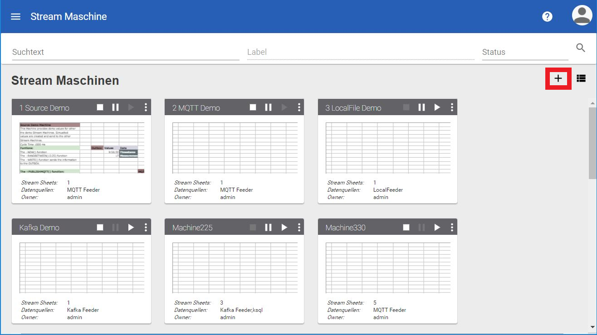

First steps¶
In this beginner tutorial you will learn how to create a new Stream Machine and send a simple message and recieve it.
To create a new Stream Machine please open up your Dashboard. This is the place all your machines are stored. In my case I already have a number of Stream Machines, but these are not of any concern to us. We want to create a new one. To do so, please click on the “+” to your top right.

This opens up a list, of all existing Consumer. Consumer are defining the root of incoming data streams. In our case we we choose “No data source”. We will define this later on. Now your new Stream Machine will open up.
To publish something, we first need to create some “interesting” data. Lets try to publish the current timestamp. To get the current timestamp choose any cell (I choose A1) of your liking and enter =NOW(). This gives you the current timestamp in the timezone of the meridian. If you don´t find yourself in the same timezone, you can adjust the time so it fits you expecation.
The timestamp in the Stream Sheet works as the one you probaly know from Excel. The value 1 measures one day. The whole sum of days amounts to the current date starting from 1900. So, if you need to add another hour to the timestamp choose another cell and enter =A1+(1/24).
Now we have created valubel data to pass on. How do we publish it? There are many ways you can do this: I recommend using the Function Wizard. Choose a cell (I choose A3) and click on the symbol for the Function Wizrad.
On the right side of your screen the Function Wizard appears. Today we choose to publish our data over MQTT (Choose PUBLISHMQTT). Now we will need to choose the right producer. In our case this is the “MQTT Producer”. The topic we will use is called “test” and the message of our choice is in “A2”. Click “Ok” and the function will automatically be created in the cell you choose beforehand.
Pro Tipps:
- Instead of using the function wizard you are also invited to just type in the publish function of your choice.
- To have the perfect structured Message, define a JSON Range on your intended Message range. (select the range, right click and choose “Define JSON Range”) In the JSON Range you can structure the message content. Use TAB and SHIFTTAB to change the hirachy of certian elemnts in your JSON Range.
- Use the Outbox to create messages, which will not be send until you publish them with e.g. PUBLISHMQTT. This gives you the power to gather information over more the one tick and add them to the Outbox. Publish OUTBOX(“Message Name”) to publish your gathered data.